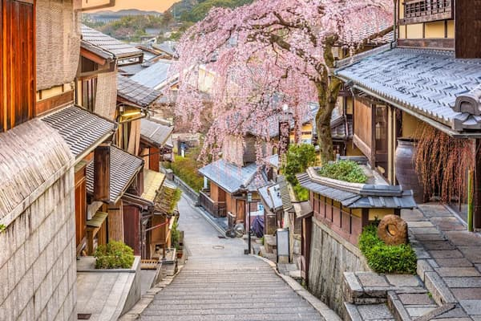
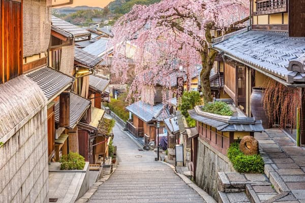

Scenic View of Mount Fuji in Japan

🌤️ Current Weather
Temperature: 45°F
Wind Speed: 5 mph
Wind Chill: N/A
🌸 Why Visit Japan?
From timeless temples and vibrant festivals to ultra-modern cities and serene countryside, Japan invites you into a world where tradition and innovation harmonize.
📸 Explore More of Japan


 

🌟 Interesting Facts About Japan
- There are more pets than children in Japan.
- Trains are the most punctual in the world.
- Slurping noodles shows appreciation.
- Japan has vending machines for everything.
- There's a baby-crying sumo contest!